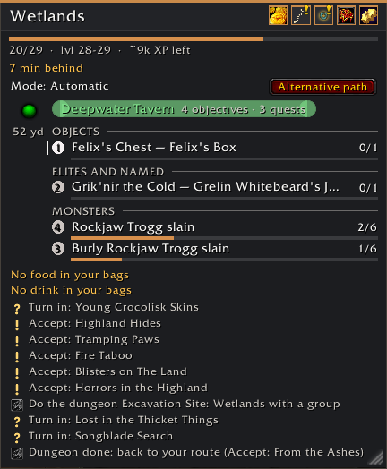

The chapter, its progress, its levels, the XP left and your pace. The current stop with its distance, then its objectives grouped as objects, elites and monsters, each with its bar, then the next steps.
Buttons in the header open the auction list, the journal on the route, the dungeons or the class quests, and the options. Drag the tracker anywhere on screen.
